Jonas Happle
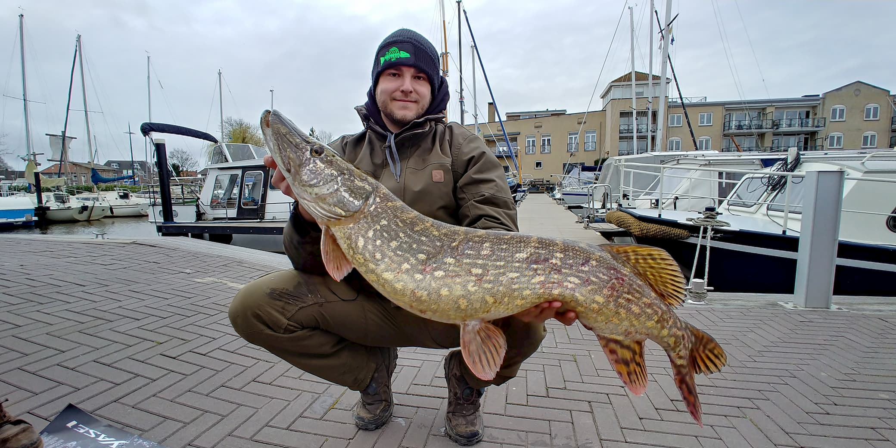
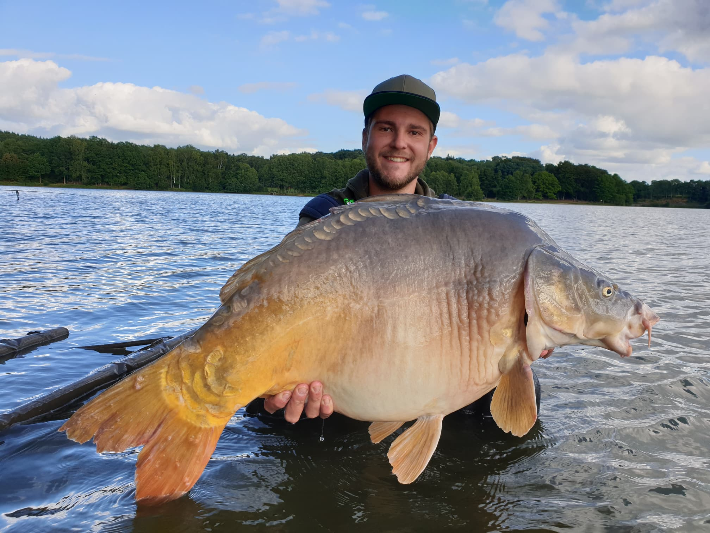
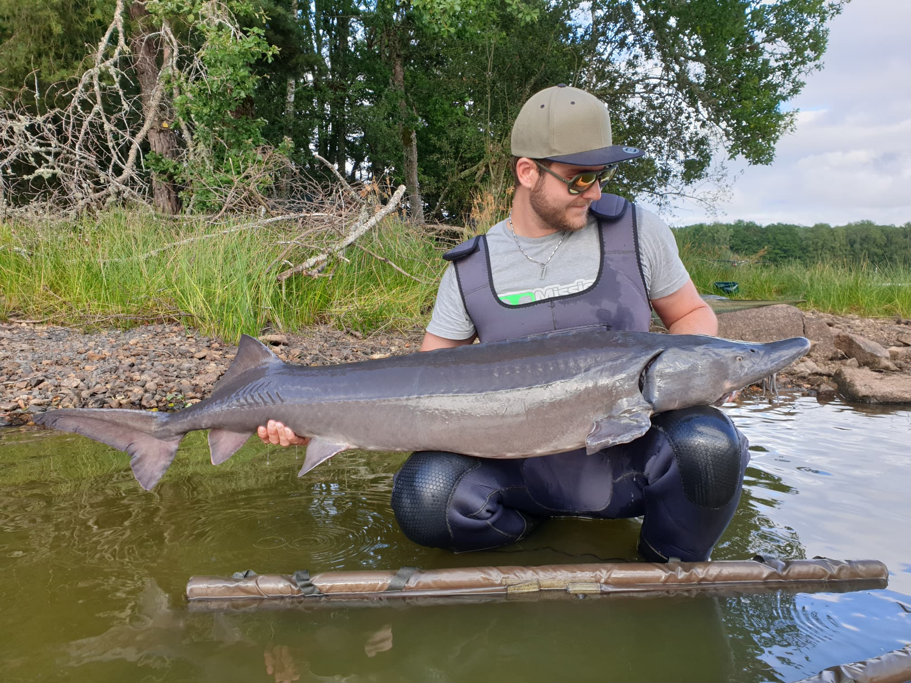
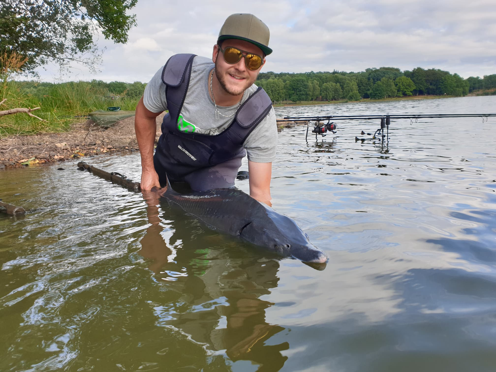
Steckbrief
- Alter 23 Jahre
- Beruf Elektrotechnik Ingenieur
- Region Schwarzwald/Baden-Württemberg
- Lieblingsgewässer Große Naturseen
- Lieblingsfisch Karpfen
- Größter Fang Karpfen, 11kg
- Tollster Fang Gelbe Ghost Karpfen / Leval
Über mich
Hi
Nico Brutsche
 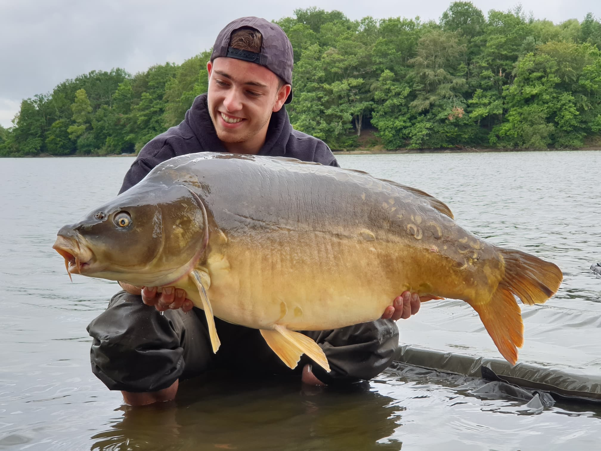
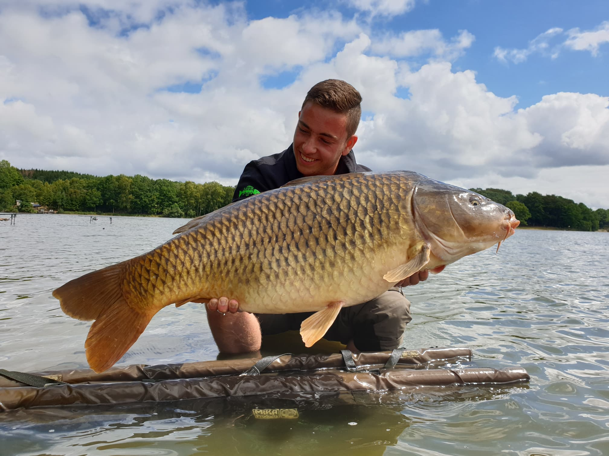
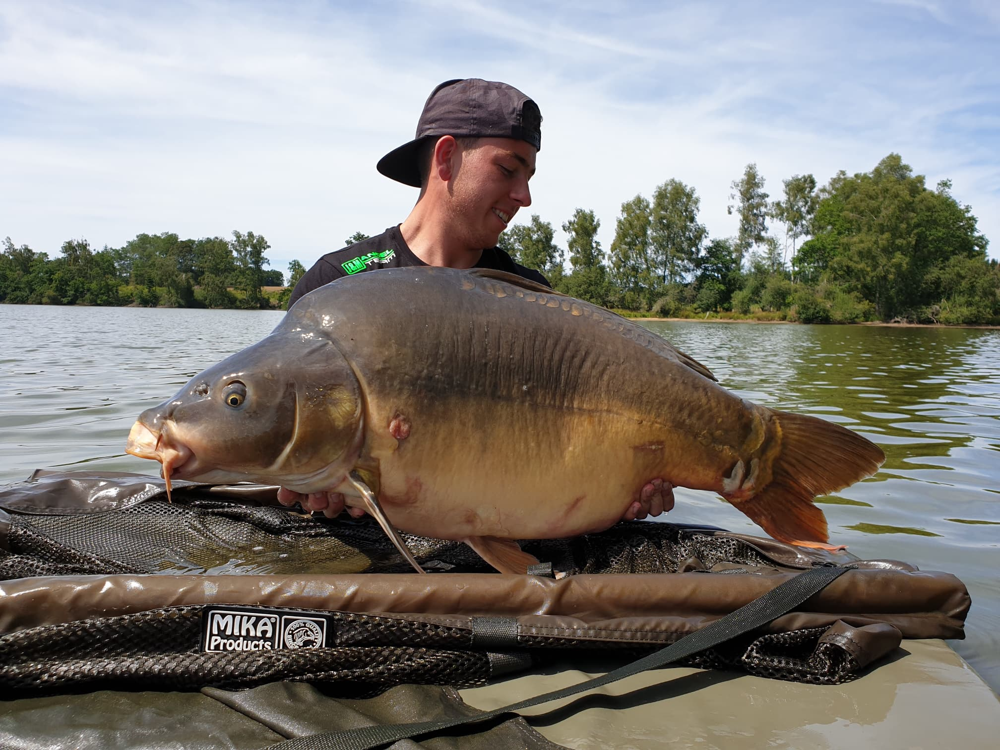
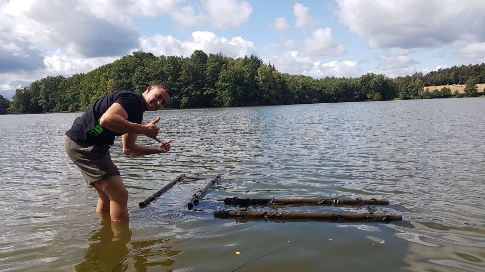
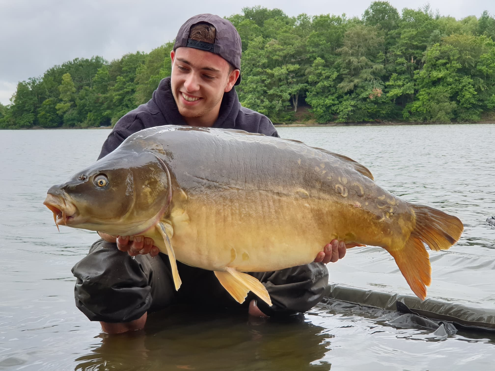
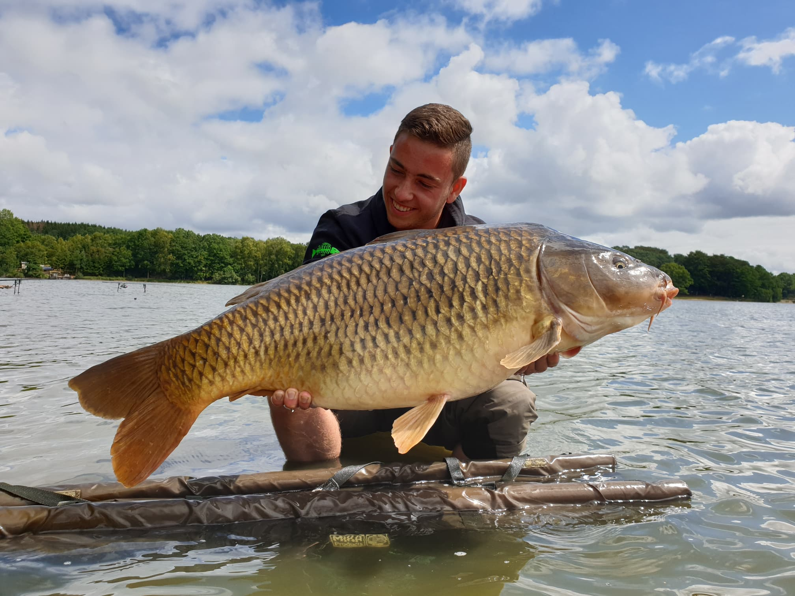
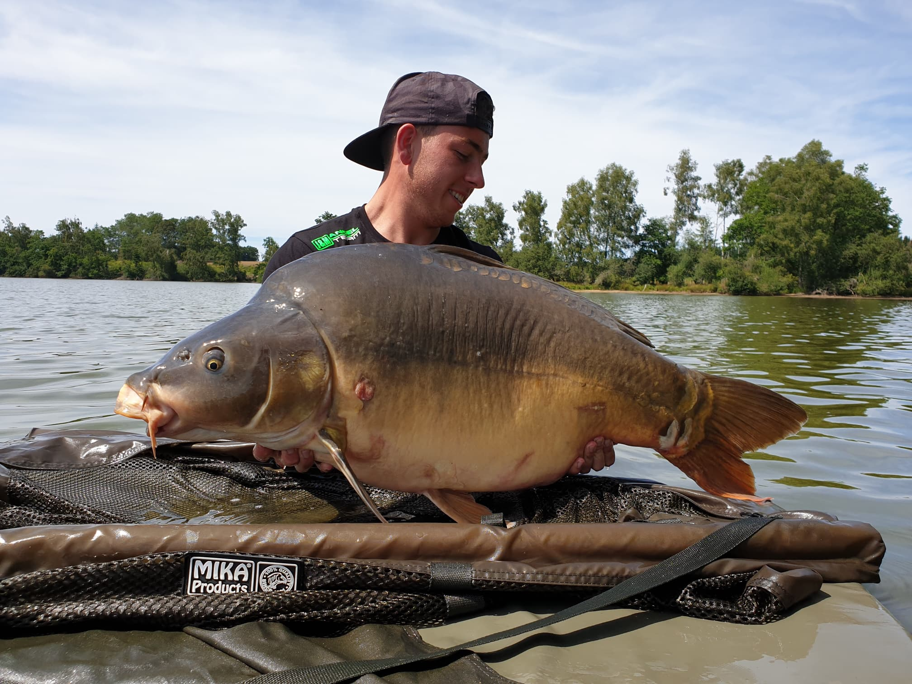
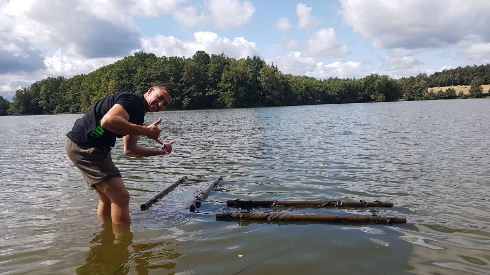
Steckbrief
- Alter 18 Jahre
- Beruf Elektroniker für Betriebstechnik
- Region Schwarzwald/Baden-Württemberg
- Lieblingsgewässer Natursee/Baggersee
- Lieblingsfisch Karpfen, Hecht
- Größter Fang
Spiegelkarpfen, 18kg; Wels, 140cm -
Tollster Fang
Freue mich über jeden Gefangenen Fisch, egal wie groß oder schwer
Über mich
Ich angel seit ich 12 bin. Begonnen hat alles als Mike mich zum Fischen
mit genommen hat. Wir machten zusammen den Angelschein, woraufhin ich in den
Angelsportverein eintrat und dort Jonas kennenlernte. Seitdem stieg die
Begeisterung für das Angeln. Außer dem Angeln gehe ich auch gerne ins Fitnessstudio.
Diese zwei Hobbies gestalten eigentlich meine komplette Freizeit.